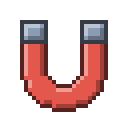
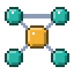
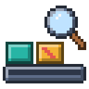
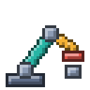
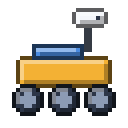
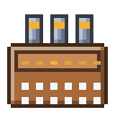
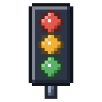

Projects
Things I have designed, built and tested, listed by the year I started them.
2026 4 projects
-

Magnet-Embed Print Assistant
Pauses a 3D print at the right layer, places a magnet in a printed pocket, and prints over it.
September
-

ROS 2 Mobile Robots
Two ROS 2 robots taken from simulation to hardware: a Nav2 waypoint mission and a zone patrol.
September
-

Tile Inspection Line
Tile grading and sorting that fuses machine vision with impact-acoustic testing. B.Tech capstone.
June
-

PLC 2-DOF Robotic Arm
A PLC-driven pick-and-place arm that lifts 5 kg with an electromagnet, checked in Ansys first.
May
2025 1 project
-

HERC-26 Rover
Competition rover on a Raspberry Pi and an Arduino Mega that hard-stops on signal loss.
December
2024 2 projects
-

MyOwnEnigma
The WWII Enigma cipher rebuilt in Verilog on an FPGA, with a keyboard, lamp board and printed case.
September
-

Look-Ahead Signals
Traffic lights that look one junction ahead; about 30% less queueing delay in simulation.
September
No projects under this topic yet.